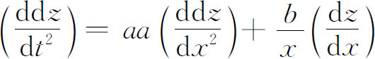
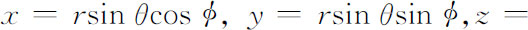
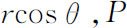
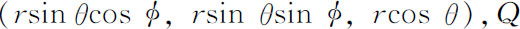
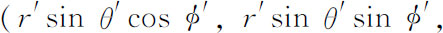
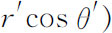
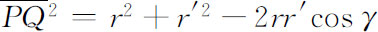
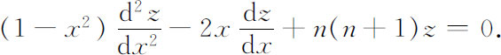
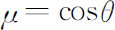
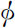

不出现），这样得到的常微分方程就是现在所谓的勒让德微分方程
不出现），这样得到的常微分方程就是现在所谓的勒让德微分方程9．这一门数学学科的产生
直到1765年偏微分方程只在解决物理问题中出现。贡献给偏微分方程的纯数学研究的第一篇论文是欧拉的《方程

的积分法研究》。(51)稍后欧拉在他的《积分学原理》(52)第三卷中发表了这个题目的一篇论文。在达朗贝尔1747年弦振动的工作以前，偏微分方程是作为条件方程为人所知的，并且只是求特解。在这个工作和达朗贝尔关于风的一般成因的书（1746）以后，数学家才认识到特解和通解之间的区别。但是一旦意识到了这个差别，他们似乎相信通解更为重要。拉普拉斯在1799年《天体力学》第一卷中还抱怨说球坐标的位势方程不能用一般形式求积分。在这个世纪里没有意识到下述事实：欧拉和达朗贝尔对振动弦得到的那种通解并不像满足初值和边界条件的特解那么有用。
数学家们确实认识到了偏微分方程并没有包含什么新的运算技巧，它与常微分方程不同之处只在于在解中可以出现任意函数。他们期望把偏微分方程化为常微分方程去确定这些任意函数。拉普拉斯（1773）和拉格朗日（1784）明确地说，他们认为一个偏微分方程被化成常微分方程问题时，这个偏微分方程就已被积分出来了。另一种方法，如像丹尼尔·伯努利对波动方程及拉普拉斯对位势方程那样，用的是寻求特殊函数的级数展开式。
18世纪在偏微分方程研究中的主要成就是揭示了它们对于弹性力学、水力学和万有引力问题的重要性。除了拉格朗日在一阶方程方面的工作外，普遍的方法没有发展起来，人们也没有意识到特殊函数展开法的潜力。人们的努力方向是求解物理问题中提出的特殊方程。偏微分方程解的理论还有待形成，这门学科整个说来还处在它的幼年时代。
参考书目
Burkhardt，H．：“Entwicklungen nach oscillirenden Funktionen und Integration der Differentialgleichungen der mathematischen Physik，”Jahres．der Deut．Math．-Verein．，10，1908，1-1804．
Burkhardt，H．，and W．Franz Meyer：“Potentialtheorie，”Encyk．der Math．Wiss．，B．G．Teubner，1899-1916，2，A7b，464-503．
Cantor，Moritz：Vorlesungen über Geschichte der Mathematik，B．G．Teubner，1898 and 1924；Johnson Reprint Corp．，1965，Vol．3，858-878，Vol．4，873-1047．
Euler，Leonhard：Opera Omnia，Orell Füssli，（1），Vols．13（1914）and 23（1938）；（2），Vols．10，11，12，and 13（1947-1955）．
Lagrange，Joseph-Louis：Œuvres，Gauthier-Villars，1868-1870，relevant papers in Vols．1，3，4，5．
Laplace，Pierre-Simon：Œuvres complètes，Gauthier-Villars，1893-1894，relevant papers in Vols．9 and 10．
Montucla，J．F．：Histoire des mathématiques（1802），Albert Blanchard（reprint），1960，Vol．3，pp．342-352．
Langer，Rudolph E．：“Fourier Series：The Genesis and Evolution of a Theory，”Amer．Math．Monthly，54，No．7，Part 2，1947．
Taton，René：L'Œuvre scienti fique de Monge，Presses Universitaires de France，1951．
Todhunter，Isaac：A History of the Mathematical Theorise of Attraction and the Figure of the Earth（1873），Dover（reprint），1962．
Truesdell，Clifford E．：Introduction to Leonhardi Euleri Opera Omnia Vol．X et XI Seriei Secundae，in Euler，Opera Omnia，（2），11，Part 2，Orell Füssli，1960．
Truesdell，Clifford E．：Editor's Introduction in Euler，Opera Omnia，（2），Vol．12，Orell Füssli，1954．
Truesdell，Clifford E．：Editor's Introduction in Euler，Opera Omnia，（2），Vol．13，Orell Füssli，1956．
————————————————————
(1) Comm．Acad．Sci．Petrop．，7，1734/1735，184-200，pub．1740＝Opera，（1），22，57-75．
(2) Hist．de l'Acad．de Berlin，3，1747，214-219和220-249，pub．1749．
(3) Nova Acta Erud．，1749，512-527＝Opera，（2），10，50-62；也还有法文的，Hist．de l'Acad．de Berlin，4，1748，69-85＝Opera，（2），10，63-77．
(4) Hist．de l'Acad．de Berlin，9，1753，196-222，pub．1755＝Opera，（2），10，232-254．
(5) Novi Comm．Acad．Sci．Petrop．，11，1765，67-102，pub．1767＝Opera，（1），23，74-91．
(6) Opera，（2），11，sec．1，2．
(7) Comm．Acad．Sci．Petrop．，12，1740，97-108，pub．1750．
(8) Comm．Acad．Sci．Petrop．，13，1741/1743，167-196，pub．1751．
(9) Hist．de l'Acad．de Berlin，9，1753，147-172和173-195，pub．1755．
(10) Jour．des Sçavans，March 1758，157-166．
(11) Misc．Taur．，13，1759．i-x，1-112＝Œuvres，1，39-148．
(12) Lagrange，Œuvres，14，164-170．
(13) Œuvres，14，162-164．
(14) Misc．Taur．，22，1760/1761，11-172，pub．1762＝Œuvres，1，151-316．
(15) Mém．de l'Acad．des Sci．，Paris，1779，207-309，pub．1782＝Œuvres，10，1-89．
(16) Opera，（3），1，197-427．
(17) Novi Comm．Acad．Sci．Petrop．，9，1762/1763，246-304，pub．1764＝Opera，（2），10，293-343．
(18) Misc．Taur．，3，1762/1765，25-59，pub．1766＝Opera，（2），10，397-425．
(19) Hist．de l'Acad．de Berlin，19，1763，242 ff．，pub．1770．
(20) Hist．de l'Acad．de Berlin，6，1750，335-360，pub．1752．
(21) Acta Acad．Sci．Petrop．，1，1781，178-190，pub．1784＝Opera，（2），11，324-334，但注明日期是从1774年开始。
(22) Novi Comm．Acad．Sci．Petrop．，10，1764，243-260，pub．1766＝Opera，（2），10，344-359．
(23) Mém．de l'Acad．des Sci．，Paris，（2），8，1829，357-570．
(24) Mém．de l'Acad．de Berlin，15，1759，185-209，pub．1766＝Opera，（3），1，428-451．
(25) Mém．de l'Acad．de Berlin，15，1759，210-240，pub．1766＝Opera，（3），1，452-483．
(26) Mém．de l'Acad．des Sci．，Paris，1762，431-485，pub．1764．
(27) Novi Comm．Acad．Sci．Petrop．，16，1771，281-425，pub．1772＝Opera，（2），13，262-369．
(28) Novi Comm．Acad．Sci．Petrop．，6，1756/1757，271-311，pub．1761＝Opera，（2），12，133-168．
(29) Misc．Taur．，2 2，1760/1761，196-298，pub．1762＝Œuvres，1，365-468．
(30) Mém，des sav．étrangers，10，1785，411-434．
(31) 这个表达式推导如下：由于球坐标到直角坐标的变换方程是


的直角坐标是
的直角坐标是

。于是我们可用距离公式表示PQ，但按余弦定理
。让PQ的两个表达式相等就给出上述cosγ的表达式。(32) Mém．de l'Acad．des Sci．，Paris，1784，370-389，pub．1787．
(33) Mém．de l'Acad．des Sci．，Paris，1782，113-196，pub．1785＝Œuvres，10，339-419．
(34) Mém．de l'Acad．des Sci．，Paris，1787，249-267，pub．1789＝Œuvres，11，275-292．
(35) 如果我们忽略中项（不出现），这样得到的常微分方程就是现在所谓的勒让德微分方程

Pn（x）满足这个方程。另一方面，Un（和［57］中的Yn）作为两个变量

和 的函数满足（53）。这Un和Yn，德国人称为球函数，而开尔文（Lord Kelvin）称为球调和或球面调和函数。
的函数满足（53）。这Un和Yn，德国人称为球函数，而开尔文（Lord Kelvin）称为球调和或球面调和函数。(36) Mém．de l'Acad．des Sci．，Paris，1789，372-454，pub．1793．
(37) Corresp．sur l'Ecole Poly．，3，1816，361-385．
(38) Mém．de l'Acad．des Sci．，Paris，1739，425-436．
(39) Mém．de l'Acad．des Sci．，Paris，1740，293-323．
(40) 对任意的

，实际上实现a的消去一般是不可能的。通积分是一个相当于特解族的概念。(41) Nouv．Mém．de l'Acad．de Berlin，1772＝Œuvres，3，549-575．
(42) Nouv．Mém．de l'Acad．de Berlin，1779＝Œuvres，4，585 634．
(43) Nouv．Mém．de l'Acad．de Berlin，1785＝Œuvres，5，543-562．
(44) Bull．dela Société Philomathique，1819，10-21；也可见Exercices d'analyse et de phys．math．，2，238-272＝Œuvres，（2），12，272-309．
(45) Hist．de l'Acad．des Sci．，Paris，1784，85-117，118-192，pub．1787．
(46) 这是他的Feuilles d'analyse第三版的书名。
(47) Hist．de l'Acad．des Sci．，Paris，1773，pub．1777＝Œuvres，9，5-68．
(48) Hist．de l'Acad．des Sci．，Paris，1784，118-192，pub．1787．
(49) Novi Comm．Acad．Sci．Petrop．，6，1756/1757，271-311，pub．1761＝Opera，（2），12，133-168．
(50) Hist．de l'Acad．de Berlin，11，1755，274-315，pub．1757＝Opera，（2），12，54-91．
(51) Misc．Taur．，32，1762/1765，60-91，pub．1766＝Opera，（1），23，47-73．
(52) 1770＝Opera，（1），13．